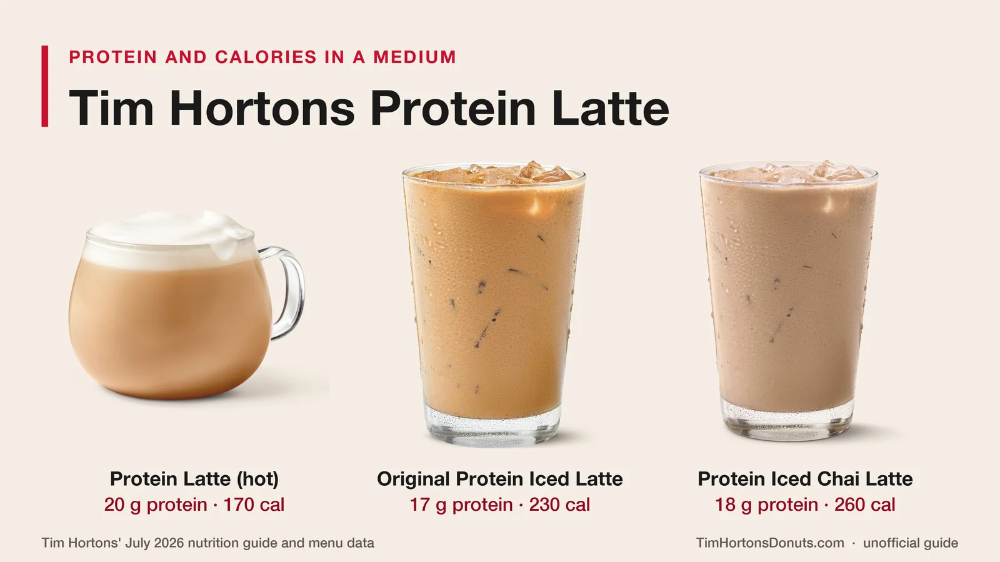
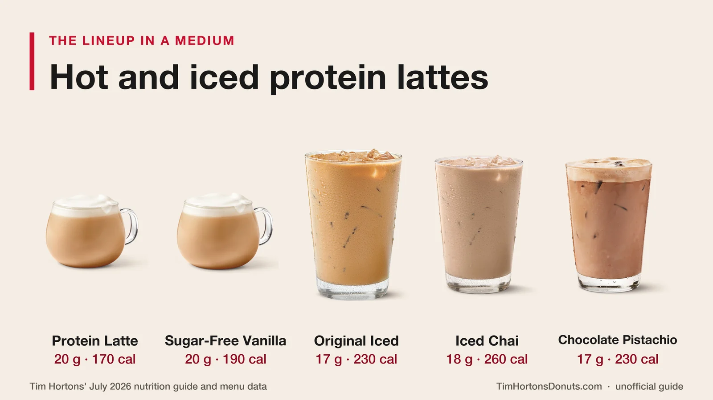
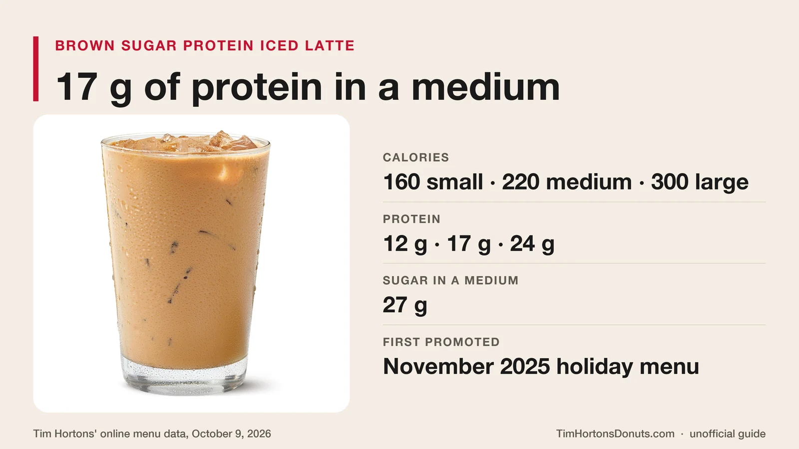
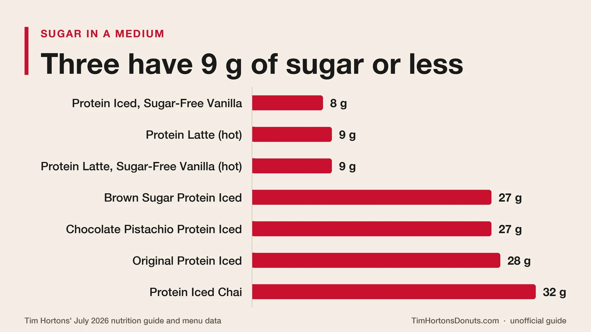
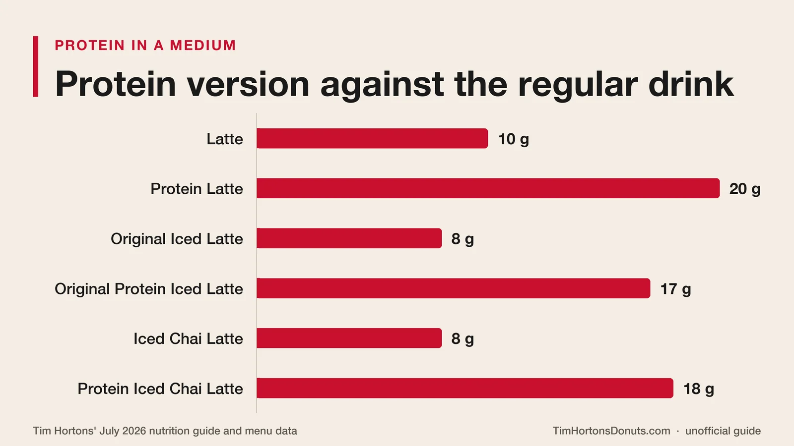
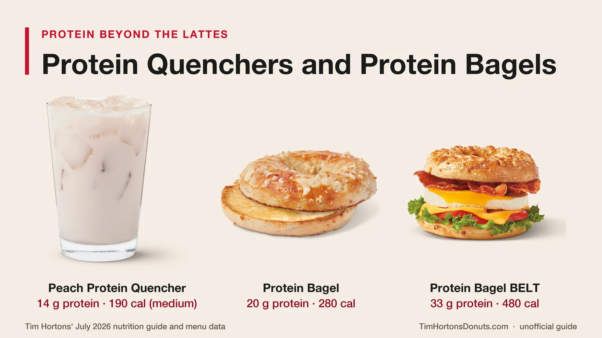

Unofficial fan guide - not affiliated with Tim Hortons
Seven protein lattes, 17 to 20 g of protein and 160 to 260 calories in a medium, from about $3.99. Here is the full lineup, the milk behind it and what reviewers thought.
Full Menu / Blog / Tim Hortons Protein Latte

A Tim Hortons Protein Latte is an espresso latte made with lactose-free, high-protein milk. A medium hot Protein Latte has 20 g of protein and 170 calories, and a medium iced one has 17 g. A medium costs about $4.49, roughly 80 cents more than a regular latte.
Tim Hortons launched Protein Lattes across Canada in August 2025, and the lineup has grown since. This page covers every protein latte in Tim Hortons' menu data, the protein and calories by size from its July 2026 nutrition guide, what the drinks cost, what the protein milk is made of and what reviewers thought.
A Tim Hortons Protein Latte is a regular latte with one change: the milk. Tim Hortons makes it with what it calls a "lactose-free, high-protein dairy beverage" in place of standard milk. The espresso is the same, and no protein powder is stirred in.
Tim Hortons announced the drinks for restaurants across Canada in late August 2025. Carolina Berti, the chain's Vice President of Category and Innovation, called them a convenient way for guests to add more protein to the drinks they already order.
The drinks appeared in Vancouver first. Food blog Foodgressing found a three-drink "Protein Coffee" lineup at a Davie Street restaurant in March 2025: a Protein Latte, a Protein Vanilla Iced Latte and a Protein Cappuccino. The national launch followed five months later, and U.S. restaurants got their own version on January 28, 2026.
Tim Hortons' menu data lists seven protein lattes: two hot and five iced. We checked it on October 9, 2026.
The first four are in Tim Hortons' July 2026 nutrition guide. The guide says limited-time and regional items may not be listed, and it leaves out the last three. Treat those as flavours that come and go, and check the app before you count on one. Our winter menu page covers the Chocolate Pistachio drinks.

The Brown Sugar Protein Iced Latte is still listed in the Iced Lattes section of Tim Hortons' menu data as of October 9, 2026. Tim Hortons promoted it in its November 2025 holiday menu announcement, with 17 g of protein in a medium.
A medium has 220 calories and 27 g of sugar, which makes it slightly lighter than the Original Protein Iced Latte. It is not in the July 2026 nutrition guide, so it may not be at every restaurant. Our holiday menu page has the rest of that lineup, and the regular Brown Sugar Iced Latte has its own page.

A hot Tim Hortons Protein Latte has 13 g of protein in a small, 20 g in a medium and 27 g in a large. The iced lattes have a little less: 12 g, 17 g and 23 g.
| Drink | Small | Medium | Large |
|---|---|---|---|
| Protein Latte (hot) | 13 g | 20 g | 27 g |
| Protein Latte with Sugar-Free Vanilla Syrup (hot) | 13 g | 20 g | 27 g |
| Protein Iced Chai Latte | 14 g | 18 g | 23 g |
| Brown Sugar Protein Iced Latte | 12 g | 17 g | 24 g |
| Original Protein Iced Latte | 12 g | 17 g | 23 g |
| Protein Iced Latte with Sugar-Free Vanilla Syrup | 12 g | 17 g | 23 g |
| Chocolate Pistachio Protein Iced Latte | 12 g | 17 g | 23 g |
The two hot drinks and the Original and Sugar-Free Vanilla iced drinks come from Tim Hortons' July 2026 nutrition guide. The other three come from its online menu data. The medium figures match what Tim Hortons said at launch: 20 g hot and 17 g iced.
For scale, a medium regular latte has 10 g of protein. A regular Tim Hortons chili has 19 g, so a medium hot Protein Latte gives you about as much protein as a bowl of chili. Our soup and chili menu page has those numbers.
A Tim Hortons protein latte has 110 to 340 calories, depending on the drink and the size. A small hot Protein Latte is the lightest at 110, and a large Protein Iced Chai Latte is the heaviest at 340.
| Drink | Small | Medium | Large | Sugar (medium) |
|---|---|---|---|---|
| Protein Latte (hot) | 110 | 170 | 230 | 9 g |
| Protein Latte with Sugar-Free Vanilla Syrup (hot) | 120 | 190 | 250 | 9 g |
| Protein Iced Latte with Sugar-Free Vanilla Syrup | 120 | 160 | 220 | 8 g |
| Brown Sugar Protein Iced Latte | 160 | 220 | 300 | 27 g |
| Original Protein Iced Latte | 160 | 230 | 310 | 28 g |
| Chocolate Pistachio Protein Iced Latte | 160 | 230 | 310 | 27 g |
| Protein Iced Chai Latte | 190 | 260 | 340 | 32 g |
Sugar is what splits the lineup. The plain hot latte and both sugar-free vanilla drinks have 8 to 9 g of sugar in a medium, which is the sugar in the milk. The four sweetened iced drinks have 27 to 32 g. Health Canada's daily value for sugars is 100 g, so a sweetened medium uses between a quarter and a third of it.

Switching to the protein version roughly doubles the protein and adds 30 to 60 calories to a medium. Sugar stays about the same or drops slightly.
| Medium drink | Calories | Protein | Sugar |
|---|---|---|---|
| Latte | 140 | 10 g | 13 g |
| Protein Latte | 170 | 20 g | 9 g |
| Original Iced Latte | 200 | 8 g | 31 g |
| Original Protein Iced Latte | 230 | 17 g | 28 g |
| Unsweetened Iced Latte | 120 | 8 g | 11 g |
| Protein Iced Latte with Sugar-Free Vanilla Syrup | 160 | 17 g | 8 g |
| Iced Chai Latte | 200 | 8 g | 31 g |
| Protein Iced Chai Latte | 260 | 18 g | 32 g |

Every row except the Protein Iced Chai Latte comes from the July 2026 nutrition guide. In each pair the protein version has 9 to 10 g more protein. Fat barely moves: a medium Latte has 5 g and a medium Protein Latte has 6 g. Our Tim Hortons calories and nutrition facts pages cover the rest of the menu.
A Tim Hortons Protein Latte costs about $3.99 for a small, $4.49 for a medium and $4.99 for a large, before tax. That is 80 cents more than a regular latte at each size.
| Size | Protein Latte | Regular latte | Difference |
|---|---|---|---|
| Small | $3.99 | $3.19 | $0.80 |
| Medium | $4.49 | $3.69 | $0.80 |
| Large | $4.99 | $4.19 | $0.80 |
The protein prices are from a third-party menu tracker, checked on October 9, 2026. Two other sources back them up. Chatelaine paid $3.99 for a small hot Protein Latte at launch, and Foodgressing found the protein drinks cost 80 cents more than the regular versions in a medium. The regular latte prices are from our coffee menu page.
Iced prices are less settled. The same tracker lists the Original Protein Iced Latte at the hot prices, while Chatelaine reported $4.49 for a small iced one. A second tracker lists the hot latte 20 cents higher at every size, and flavoured versions cost more. Tim Hortons does not publish a national price list and prices vary by restaurant, so check the app for yours.
The protein comes from the milk itself, not from a powder. Two menu trackers reproduce the same ingredient list for the "Dairy Protein Beverage": skim milk, water, milk protein concentrate, cream, lactase, dipotassium phosphate, corn starch, carrageenan, vitamin A palmitate and vitamin D3. The only other ingredient in the plain hot latte is espresso made from 100% Arabica coffee.
Registered dietitian Stephanie Hnatiuk, who reviewed the drink in December 2025, describes it as filtered milk. An extra filtration step removes lactose and lowers the carbohydrates while keeping the protein. That is why a Protein Latte has more protein and slightly less sugar than a regular one.
Foodgressing reported that the Vancouver restaurant used Dairyland high-protein milk, which has 18 g of protein per 250 mL. Tim Hortons has not named a brand in its releases.
It is made with lactose-free milk, but it is not dairy-free. Tim Hortons' July 2026 allergen guide marks all four protein lattes it lists as containing milk.
The guide also marks the hot Protein Lattes as "may contain" tree nuts, and the iced ones as "may contain" tree nuts and wheat and gluten. Our Tim Hortons ingredients page explains how to check allergens before you order.
Yes. Tim Hortons says guests can add the high-protein dairy to hot and iced coffees, teas, Cold Brews and Iced Capps, and can add a flavour shot to any Protein Latte. That turns a regular order into a protein coffee. Tim Hortons' nutrition guide has no figures for those custom drinks, so the tables above only cover the lattes.
Protein has spread to the rest of the menu too.

Our new menu items page tracks each launch, the summer drinks page covers the Protein Quenchers, and our guide to ordering at Tim Hortons explains how to ask for changes.
Canadian reviewers liked it, mostly because it tastes like a normal latte. Chatelaine's testers reported that the hot and iced versions tasted the same as the regular lattes, with a smooth texture and no aftertaste.
Hnatiuk expected a chalky protein drink and found hers "smooth, creamy, slightly sweet" instead. She does not drink coffee, so she ordered a tea latte made with the protein milk. Her verdict as a sport dietitian is that it is a good pick when you need a convenient protein boost, struggle to eat protein in the morning or are going to Tim Hortons anyway. It does not replace a meal, because it has no fibre and too few calories.
Foodgressing tried all three drinks in Vancouver, enjoyed them and noted the latte's smooth texture.
Yes. The U.S. lineup launched on January 28, 2026, at participating restaurants, and it has more flavours. Tasting Table counted seven, each sold hot or iced: classic, vanilla, sugar-free vanilla, caramel, mocha, matcha and chai. It reported 11 to 14 g of protein in a small, 17 to 21 g in a medium and 23 to 28 g in a large.
Its reviewer, Megan Hageman, described the U.S. milk as blended with whey, and her verdict was mixed. She rated the iced matcha best, liked the caramel and mocha, and advised skipping the sugar-free vanilla. In Columbus, Ohio, a small cost US$4.89 to US$5.79. Those results do not carry over to Canada, where the milk and the flavours differ. Our Tim Hortons in the U.S. page lists where the chain operates south of the border.
Pick by what matters most to you. This checklist uses the medium size.
Want more ideas? See our ranking of the best Tim Hortons drinks, the Tim Hortons matcha lineup and how the chain compares in Tim Hortons vs Starbucks.
Yes. Tim Hortons has sold Protein Lattes at restaurants across Canada since August 2025. Its menu data listed seven versions in October 2026: two hot and five iced.
The Protein Latte launched across Canada in August 2025, and trade coverage of the announcement is dated August 28, 2025. A Vancouver restaurant was already selling a three-drink protein lineup in March 2025. U.S. restaurants followed on January 28, 2026.
A large hot Protein Latte has 27 g of protein. A large Original Protein Iced Latte has 23 g, and a large Brown Sugar Protein Iced Latte has 24 g.
No powder appears on the ingredient list. The protein comes from the lactose-free, high-protein dairy beverage, which lists skim milk and milk protein concentrate among its ingredients. A dietitian who reviewed the drink describes it as filtered milk.
The plain hot Protein Latte is not sweetened. Its 9 g of sugar in a medium is the sugar in the milk. The Original Protein Iced Latte is sweetened and has 28 g, and the sugar-free vanilla versions have 8 to 9 g.
It depends on the version. A medium hot Protein Latte has 170 calories, 20 g of protein and 9 g of sugar. A medium Protein Iced Chai Latte has 260 calories and 32 g of sugar. A dietitian who reviewed it called it a convenient protein boost, not a meal replacement.
Yes. It is made with espresso, so it contains caffeine. Tim Hortons' nutrition guide does not list caffeine for any drink, so we cannot give a figure. Health Canada advises healthy adults to keep caffeine to 400 mg a day.
Tim Hortons says its high-protein dairy can be added to Iced Capps, as well as hot and iced coffees, teas and Cold Brews. Its nutrition guide has no protein or calorie figures for those custom drinks.
Wheat is not marked for the hot Protein Latte in Tim Hortons' July 2026 allergen guide, which lists milk and "may contain" tree nuts. The iced protein lattes are marked "may contain" wheat and gluten. Shared equipment means cross-contact is always possible.
A small hot Protein Latte has 110 calories. A small with sugar-free vanilla syrup has 120, hot or iced, and a small Original Protein Iced Latte has 160.
Tim Hortons says Protein Lattes can be customized with a flavour shot. Its menu data lists vanilla, sugar-free vanilla and chocolate syrups, extra espresso shots and whipped topping as options for the hot Protein Latte. Sweetened syrups add sugar and calories.
Not as a protein latte. The protein comes from the dairy, and the menu data shows the lactose-free protein dairy as the only milk choice for these drinks. A latte made with a plant-based milk is a regular latte.
This is an independent, unofficial guide. It is not affiliated with, endorsed by, or sponsored by Tim Hortons or Restaurant Brands International. Protein, calories and sugar come from Tim Hortons' July 2026 nutrition guide and its online menu data as checked on October 9, 2026, and can change. Protein latte prices are from third-party menu trackers and launch-period reviews (Canadian dollars, before tax); prices vary by restaurant. This page is general information, not medical or dietary advice. See Sources.